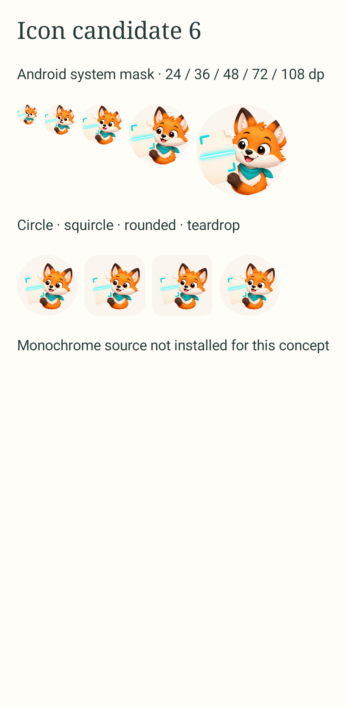
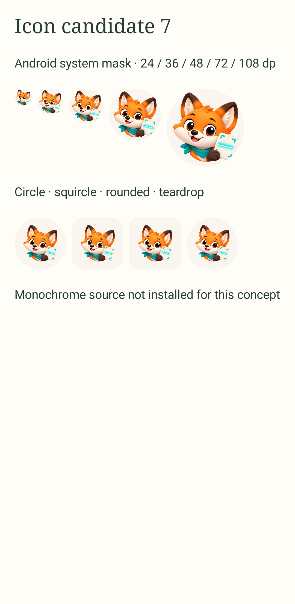

4 · Raposa + documento escaneando
Rosto da 2, folha entre 2 e 3, cantos de enquadramento e linha de leitura. Candidata final escolhida; confira o recurso instalado em 24 dp e a versão temática.
 Arte original transparente
Arte original transparenteA opção 4 continua instalada no APK debug e foi escolhida pelo proprietário como candidata final, ainda sem aceite do conjunto. Duas composições diferentes, 6 (folha à esquerda) e 7 (rosto dominante com folha menor à direita), foram testadas como alternativas. As três pranchas recentes mostram 24, 36, 48, 72 e 108 dp no Android API 34, além de máscaras; somente a opção 4 tem recurso temático instalado. Em 24 dp, as alternativas dão mais rosto, mas o sinal de escaneamento perde clareza. Elas são estudos, não substituições silenciosas do ícone.
Ver captura do ícone instalado no launcher · Ver máscaras do recurso instalado
Rosto da 2, folha entre 2 e 3, cantos de enquadramento e linha de leitura. Candidata final escolhida; confira o recurso instalado em 24 dp e a versão temática.
Arte original transparenteA folha e a face dividem o símbolo. Em 24 dp, o rosto encolhe e os cantos de escaneamento ficam frágeis; mantém-se como exploração.

Arte raster transparenteO rosto fica mais forte, mas o documento é pequeno demais para comunicar scanner em 24 dp. Também não tem vetor temático validado.

Arte raster transparenteRosto mais expressivo, papel curto e marca de leitura discreta. Melhor leitura inicial em 24 dp.
 Arte original transparente
Arte original transparenteComposição parecida, com documento um pouco mais evidente e detalhe na cor do lenço.
 Arte original transparente
Arte original transparenteMais documento, mas a expressão da raposa perde força em 24 dp.
 Arte original transparente
Arte original transparente